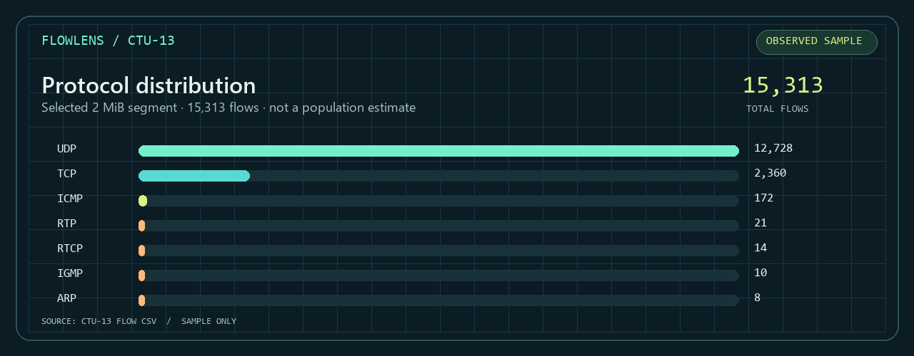
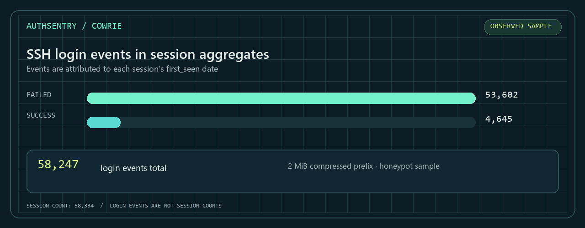
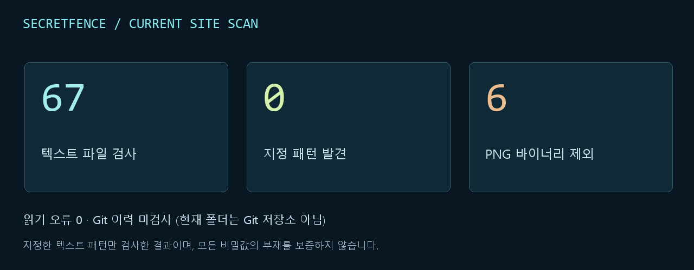
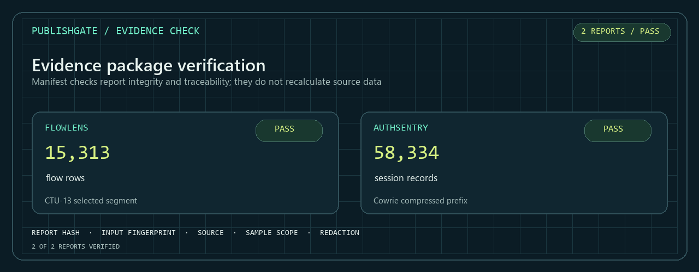
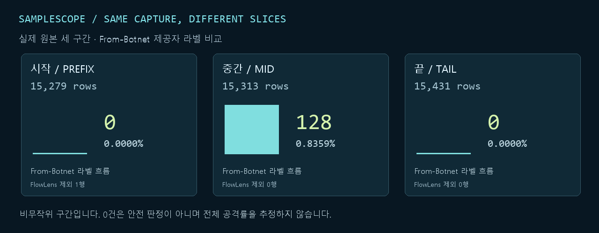
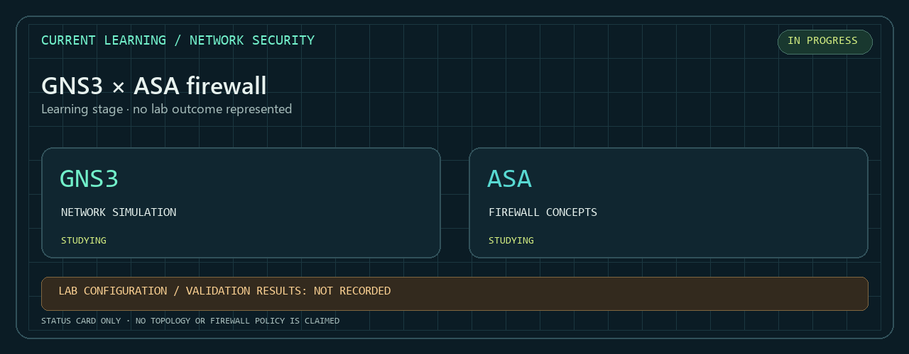

FlowLens
CTU-13 네트워크 흐름 분석
15,313개 흐름 · 잘못된 행 0


선택한 약 2 MiB 구간입니다. 전체 capture 비율이나 공격률을 뜻하지 않습니다.
DASHBOARD / PROJECT ARCHIVE
흐름을 읽고, 로그를 해석하고, 결과를 다시 대조합니다.
실제 공개 자료에서 출발한 다섯 프로젝트의 결과와 근거입니다.
CTU-13의 네트워크 흐름
Cowrie 세션 집계 레코드
표본 위치에 따른 분포 비교
네트워크·보안 프로젝트 검토자에게 제가 정한 작업 기준과 실제 자료의 실험 결과를 보여줍니다. 수치는 서로 다른 집계 단위이며, 전체 인터넷의 비율을 뜻하지 않습니다.
SELECTED PROJECTS / 01—05
AI가 실행하고 다시 계산한 실제 표본의 기록입니다. 결과 이미지에서 자세히 살펴보고 원본 근거까지 따라갈 수 있습니다.
CTU-13 네트워크 흐름 분석
15,313개 흐름 · 잘못된 행 0

선택한 약 2 MiB 구간입니다. 전체 capture 비율이나 공격률을 뜻하지 않습니다.
Cowrie SSH 세션 집계
58,334개 세션 집계 · 실패 53,602

압축 파일 첫 2 MiB 표본입니다. Honeypot 관측은 인터넷 전체를 대표하지 않습니다.
공개 후보 파일의 패턴 검사 · 2026-10-02 기록
67개 텍스트 검사 · 패턴 0건 · PNG 6개 제외

2026-10-02 당시 파일의 지정 패턴 검사입니다. 이후 페이지 변경은 반영하지 않았습니다. PNG 6개와 Git 이력은 검사 범위 밖입니다.
보고서와 증거 manifest 대조
2 / 2 보고서 검증 통과

해시와 출처 연결을 확인했습니다. 원시 자료 수치를 재계산하는 도구는 아닙니다.
어디를 보느냐에 따라, 결과는 얼마나 달라질까?
46,023개 원본 행 · 3개 실제 구간 비교

비무작위 구간 비교입니다. 라벨 0건은 안전 판정이 아니며, 전체 공격률을 추정하지 않습니다. 시작 구간 IPX/SPX 1행은 FlowLens 분석 범위 밖입니다.

현재 배우고 있는 네트워크·방화벽 주제
학습 중 · 구성·검증 결과는 아직 기록 전
실제 실습 자료를 확인하기 전까지 토폴로지, 정책, 통과 수치 같은 결과는 주장하지 않습니다.
다섯 프로젝트의 코드·분석·보고서는 AI가 수행했습니다. ASA는 학습 관심 주제이며 실습 결과로 집계하지 않습니다.
NEXT / KEEP EXPLORING